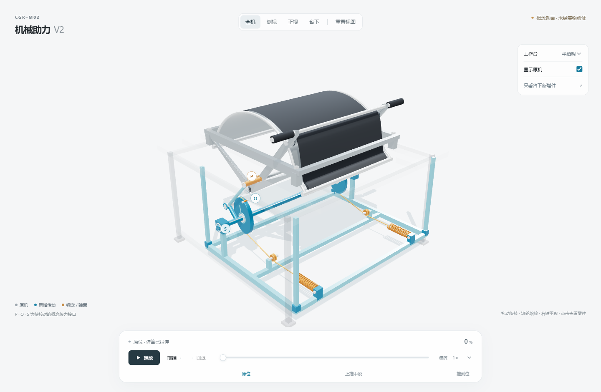

CGR-M02 · 机械助力 V2

本页提供可直接读取的模型说明和静态截图。交互演示由 Three.js 渲染；静态截图不能证明整段动画或实机性能。

传动关系
上推手柄 → 原机活动构件绕固定支点 O 摆动 → 下部连接点 P 驱动定长连杆 → 曲柄带动固定同步轴 S → 左右凸轮同相转动 → 钢索经过导向轮牵动两侧弹簧。
前推时弹簧缩短，表达释能；回退时所有运动反向，弹簧重新拉伸，表达储能。手柄、连杆、曲柄、凸轮、钢索和弹簧均由同一个行程进度驱动。
部件与操作
- 银灰色：原机手柄、卷辊、支架；黑色：卷布及放料凹槽所在区域。
- 蓝色：台下新增连杆、曲柄、同步轴与左右凸轮。
- 橙色：钢索、导向及拉伸弹簧；两侧对称布置。
- 播放一次完成前推和回退；可暂停、单向运动、拖动进度或调节速度。
- 可自由旋转、缩放和平移，切换全机、侧视、正视、台下视角，点击零件查看名称与作用，隐藏工作台或原机上部。
模型边界
P、O、S 的连接位置是概念假设。本演示使用自洽的参数化几何近似：定长连杆闭环求解、固定轴心、钢索长度约束及弹簧端点联动。卷布形状和弹簧钩端是示意，未进行材料接触或受力仿真。
模型中的比例不是经测量确认的安装尺寸；不代表已验证的省力率、工程载荷、加工方案、安全防护或实机性能。此网页仅展示机械助力 V2，未修改冻结的电动化 V5 方案。